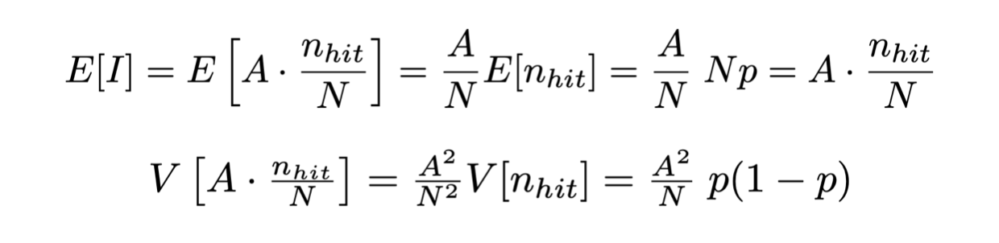

Lezione 8: esempi di applicazione di sequenze pseudo-casuali ed esempi di calcolo numerico
Contents
Lezione 8: esempi di applicazione di sequenze pseudo-casuali ed esempi di calcolo numerico¶
8.1 la riproduzione simulata di un esperimento: i toy experiment¶
Le sequenze di numeri pseudo-casuali sono molto spesso utilizzate per simulare il comportamento statistico di un esperimento di misura, o per eseguire integrazioni numeriche
Secondo il paradigma frequentista della statistica, le incertezze di una misura si ricavano dalla sua distribuzione di densità di probabilità, assumendo che l’esperimento utilizzato per compiere quella misura sia ripetuto un grande numero di volte
Operativamente, l’esperimento che porta al risultato finale di una misura è unico, dunque alcuni comportamenti statistici si possono solamente simulare
La simulazione di un esperimento di misura è detta toy experiment

8.1.1 la precisione sulla media di una misura¶
Per determinare la precisione sulla media di una campione, quindi, è necessario effettuare la generazione del campione molte volte, per osservare la distribuzione dei valori della media:
// loop sui toy experiment statistiche s_singleToy ; statistiche s_tot ; for (int iToy = 0 ; iToy < NToys ; ++iToy) { int i = 0 ; // il loop seguente è un singolo toy experiment while (i++ < NMAX) s_singleToy.addEvent (rand_range (-3., 3.)) ; s_tot.addEvent (s_singleToy.getMean ()) ; s_singleToy.reset () ; } // loop sui toy experiment
NOTA BENE: l’oggetto
s_singleToyviene vuotato al termine di ogni toy experiment
Mentre l’oggetto
s_singleToyraccoglie le statistiche di ogni singolo toy experiment e viene utilizzato per calcolarne la media, l’oggettos_totraccoglie il campione dei valori delle medie per tutti i toy experiment
8.1.2 la visualizzazione della distribuzione delle medie¶
La media delle misure è una funzione di variabili casuali, quindi è una variabile casuale a sua volta
La sua distribuzione di probabilità si ottiene per campionamento con i toy experiment, ad esempio riempiendo un istogramma all’interno del ciclo sui toy:
TH1F h_medie ("h_medie", "distribuzione delle medie", 41, -0.5, 0.5) ; // loop sui toy experiment for (int iToy = 0 ; iToy < NToys ; ++iToy) { int i = 0 ; // il loop seguente è un singolo toy experiment while (i++ < NMAX) s_singleToy.addEvent (rand_range (-3., 3.)) ; h_medie.Fill (s_singleToy.getMean ()) ; } // loop sui toy experiment

8.1.3 il confronto con la deviazione standard della media¶
La deviazione standard della media per singolo toy, essendo l’incertezza associata alla media delle misure, deve quindi corrispondere alla deviazione standard del campione delle medie
Per controllare questa corrispondenza, si può utilizzare la classe
statistichestatistiche s_singleToy ; statistiche s_tot ; statistiche s_incertezzaMedia ; // loop sui toy experiment for (int iToy = 0 ; iToy < NToys ; ++iToy) { int i = 0 ; // il loop seguente è un singolo toy experiment while (i++ < NMAX) s_singleToy.addEvent (rand_range (-3., 3.)) ; s_tot.addEvent (s_singleToy.getMean ()) ; s_incertezzaMedia.addEvent (s_singleToy.getSigmaMean ()) ; s_singleToy.reset () ; } // loop sui toy experiment
che produce come risultato:
media delle deviazioni standard della media per i singoli toy: 0.0773579 deviazione standard della distribuzione delle medie dei singoli toy: 0.0774481
(esempio 8.2)
8.2 integrazione con numeri pseudo-casuali¶
Le sequenze di numeri pseudo-casuali possono essere utilizzate efficacemente anche per calcolare aree sottese da funzioni
I metodi che sfruttano numeri pseudo-casuali prendono il nome di tecniche Monte Carlo, derivando questa definizione dall’omonimo casinò, regno della dea bendata
L’utilizzo di queste tecniche in fisica è molto vasto, ad esempio nel calcolo di integrali in meccanica quantistica e teoria quantistica dei campi, per la simulazione di apparati di misura, et cetera
8.2.1 prerequisiti¶
Studiamo il caso di integrazione di funzioni mono-dimensionali positive, continue e definite su un intervallo compatto e connesso (quindi finite su tutto l’insieme di definizione)
Sia data come esempio la funzione g(x) = sin(x) + 1 definita sull’intevallo (0, π)
per questa funzione sappiamo calcolare l’integrale in forma analitica, pari a 2π

8.2.2 il metodo hit-or-miss¶
L’algoritmo hit-or-miss si comporta in modo simile alla generazione di numeri pseudo-casuali con la tecnica try-and-catch
Si generano N coppie numeri pseudo-casuali nel piano che contiene il disegno della funzione e si conta il numero di eventi nhit che cascano nell’area sottesa dalla funzione

Di conseguenza, se A è l’area del rettangolo dove sono stati generati gli eventi ed m ed M gli estremi di integrazione:

8.2.3 la precisione del metodo¶
Non si possono generare infiniti numeri pseudo-casuali, dunque il risultato sarà approssimato:

La quantità I è il risultato dell’integrale per il metodo hit-or-miss
Essendo funzione di numeri pseudo-casuali, è a sua volta un numero pseudo-casuale
Ha un valore atteso ed una varianza
Quest’ultima è l’incetezza numerica nel calcolo dell’integrale
A ed N sono noti senza incertezza
nhit ha invece distribuzione binomiale, associando al successo il fatto che un punto generato si trovi sotto la funzione da integrare, con probabilità p = nhit / N
8.2.4 l’incertezza numerica del metodo hit-or-miss¶
Valore di aspettazione e varianza di I quindi, dati N numeri pseudo-casuali geneati, sono quindi: 
Di conseguenza, l’incertezza numerica sul calcolo dell’integrale è data dalla radice della varianza
8.2.5 l’implementazione del metodo hit-or-miss¶
Anche in questo caso, si tratta di generare numeri pseudo-casuali sul piano entro (0, 2π) sull’asse x e (0, 2) sull’asse y e contare quante coppie di punti stiano sotto la funzione da integrare:
int N = 10000 ; int nHit = 0 ; double xMin = 0. ; double xMax = 2*M_PI ; double yMin = 0. ; double yMax = 2. ; for (int i = 0 ; i < N ; ++i) { if (isBelow (fsin, xMin, xMax, yMin, yMax) == true) ++nHit ; }
dove:
bool isBelow (double g (double), double xMin, double xMax, double yMin, double yMax) { double x = rand_range (xMin, xMax) ; double y = rand_range (yMin, yMax) ; if (y < g (x)) return true ; return false ; }
A partire da nhit, quindi, si possono calcolare il valore dell’integrale e la sua incertezza.
8.2.6 il metodo del crude Monte Carlo¶
L’agoritmo crude Monte Carlo sfrutta le proprietà del valore di aspettazione di una funzione
Dato un insieme di numeri pseudo-casuali xi generati secondo una distribuzione di probabilità uniforme f(x) definita fra m ed M, il valore di aspettazione della funzione g(x) risulta essere:
 per definizione della distribuzione di probabilità uniforme
per definizione della distribuzione di probabilità uniformeE[g(x)] è stimabile con la media dei valori g(xi) e la varianza di g(x) è stimabile con la deviazione standard della media dei valori g(xi), che si calcola a partire dalla varianza V[g(x)]
Dunque si può calcolare una stima dell’integrale di g(x) e della sua incertezza: